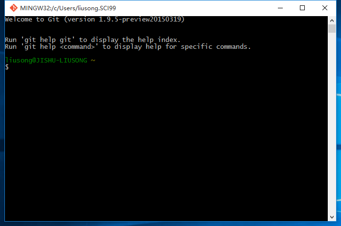

使用Git+Hexo搭建自己的博客系统
准备工具
- 一个操作系统：windows，Linux，mac都行
- Git
- Node.js
准备工具的安装就不做具体说明了，官网下载安装即可，不同系统使用对应版本。安装Hexo
在任意位置右键，或者桌面点击Git Base，打开Git终端。

输入以下命令:1
npm install -g hexo
创建Hexo项目文件夹
安装完成后，使用Git Base进入你喜欢的目录，或者在你喜欢的目录中右键选择Git Bash，并运行以下命令，Hexo会自动添加网站所需所有文件。1
hexo init
安装Hexo网站所需依赖包
1 | npm install |
在本地运行并查看hexo博客
1 | hexo generate |
然后在浏览器中输入http://localhost:4000就可以访问博客了。
更改博客主题
主题可以去hexo官网查找，或者直接去git社区搜索，很多。找到合适的主题后，复制git地址，然后执行以下命令1
git clone https://github.com/hexojs/hexo-theme-light.git themes/light
完成后，修改_config.yml配置文件中的theme属性，将后面的值改为light。再运行上面本地查看博客的命令即可查看到新主题的博客。
在_config.yml配置文件中还有诸多参数设置，详情可以查阅官网说明文档。
利用git创建博客
注册账号不做演示。
创建Repository
创建的时候注意Repository的名字。atomyliu，那么我应该创建的Repository的名字是：atomyliu.github.io。
配置Hexo
找到你Repository下的SSH或者HTTPS地址，然后复制。编辑hexo项目下的_config.yml,如下所示：1
2
3
4
5# Deployment
## Docs: http://hexo.io/docs/deployment.html
deploy:
type: git
repo: https://github.com/atomyliu/atomyliu.github.io
然后保存这个文件。
然后，我们需要安装一个hexo的git插件，在hexo项目目录中运行Git Bash,然后输入1
npm install hexo-deployer-git --save
然后1
2hexo generate
hexo deploy
这样，我们的博客就完全搭建起来了，在浏览器中输入http://atomyliu.github.io就可以访问你的个人博客了。
PS:hexo的命令有简化版1
2
3
4hexo g == hexo generate
hexo d == hexo deploy
hexo s == hexo server
hexo n == hexo new
再PS:github里的博客空间是300M，童鞋们不要弄太多哦，另外这个是纯静态的。
再再PS：关于git在本地化是需要SSH的问题，参考原有的资料即可，这里不对git做更多的介绍了。
再再再就没有PS了….